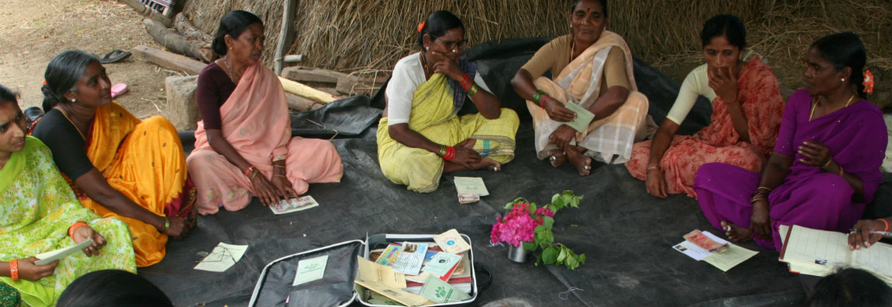

WITHIN REACH: HOW BANKS CAN GROW PROFITABLY BY BEING MORE INCLUSIVE

How Banks can Grow Profitably by being More Inclusive?
This question brought together stakeholders from across the financial services sector, development organisations and the public sector, to a Roundtable event ‘Within Reach’ organised by CARE with Accenture in Mumbai on 29th June. Setting an optimistic tone, Rajan Bahadur, MD and CEO of CARE India opined that with banks gearing up for financial deepening, there is a considerable sense of do-ability felt across the supply side of financial system. Lending credence to his observation was G. R. Chintala, Chief General Manager, Microcredit Innovations Department of NABARD, who shared that the business from banking with under-banked individuals and micro-enterprises India has already touched a figure of US$21 billion!
Elaborating on the six ways that banks can profitably and responsibly meet the financial needs of unbanked and under banked consumers, Finn Erik Kolnes from Accenture Development Partnerships, UK and Fiona Jarden from CARE International emphasized that banks should financial inclusion a core strategy. Recalling a quote from field, Fiona quipped that banks should not just know the ‘he/she’ of a client but also ‘him/her’.
An expert panel of Ajay Desai (YES Bank), Pradeep Sarin (IFMR Holdings), P. Satish (Sa-Dhan), and G. Senthil Kumar (CARE India), felt that there remain several institutional and mind-set challenges in banks. ‘Frugal innovation’ is the need of the hour, said Ajay, and offered a very practical advice to Banks of not themselves trying need to be the last mile connect, but facilitating the connections. Drawing from CARE’s ‘Banking on Change’ initiative, Senthil shared that there was a need for Banks to utilize the huge social capital and infrastructure created by Self Help Promoting Institutions throughout the country. The panel was divided over the present status of financial literacy among poor clients, especially women, and yet unequivocally recognized that financial literacy is a must for financial inclusion. The disruptive ideas in the financial inclusion space shared in the Panel included, digitization, social collateral based banking, and a focus-shift to ‘customer lines’ from product lines.
Re-emphasizing the need for Banks to combine data curation with a curiosity to know their customer fully and to brace up the institutional and mind-set challenges they face in harnessing the business opportunity offered by financial inclusion, Bharati Joshi from CARE India closed the event by urging banks to read the ‘comm’ in ‘commercial’ as representing the ‘community’ to make full financial inclusion possible.